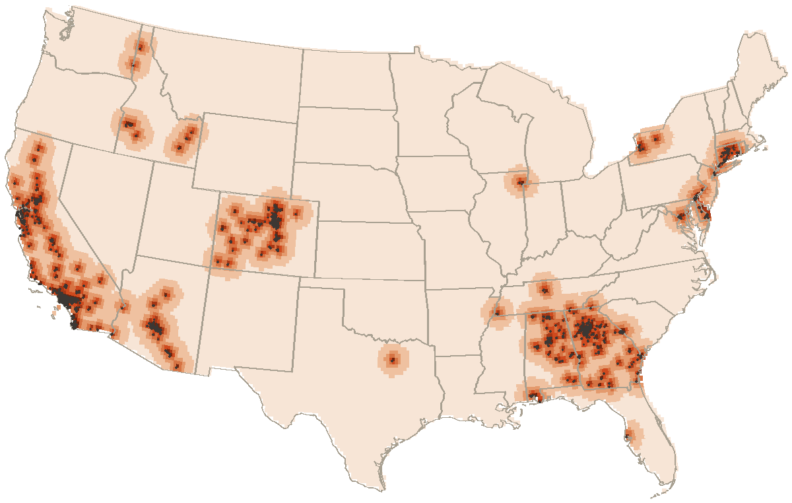

median distance to a wing counter, lower forty-eight
1.5 mi
median distance from one counter to the next
1326
places
28
recipes
1188
links between pages
Distance to a wing
Every point in the lower forty-eight, shaded by the distance to the closest of the 1326 places on the map. Black dots are the places themselves. Half the country sits within 163 miles of one.

under 33–66–1010–1818–3030–60over 60miles to the nearest wing counter
The far corners
Miles to a wing
Where
652
48.84, -97.48
650
48.84, -97.66
647
48.84, -97.84
647
48.84, -97.30
644
48.84, -98.02
643
48.66, -97.48
Founding years
The 27 places here whose founding year is on a page. Stems stack where a year is crowded. Hover one for the name.
By decade
Decade
Pits
1920s
1
1930s
1
1940s
2
1950s
2
1960s
2
1970s
2
1980s
6
1990s
4
2000s
5
2010s
2
Ingredients, by how many recipes call for them
Across 28 recipes, counting each ingredient once per recipe. Measures and cutting words are dropped.
As a table
Ingredient word
Recipes
sugar
19
salt
18
vinegar
17
garlic
15
pepper
12
black
10
cayenne
8
peppers
8
powder
7
sauce
7
butter
6
lemon
6
onion
6
paprika
6
tablespoonfuls
5
mustard
5
Days open
From the 367 places whose days we could read. A wing counter keeps the weekend and most of the week. 37 of the 367 shut on Sunday; another 959 have no published days at all, and those draw as blanks. A blank means unread, and the filters leave it out.
As a table
Day
Open
Monday
334
Tuesday
345
Wednesday
360
Thursday
363
Friday
364
Saturday
361
Sunday
330
Kin, by kind of page
Every one of the 1188 links between pages, by the kind of page at each end. The row points at the column.
The distance map is computed on a grid clipped to the states' own outlines (Natural Earth, public domain) and measured against every place on the map, most of which come from OpenStreetMap under the ODbL. Everything else is counted straight out of the records.